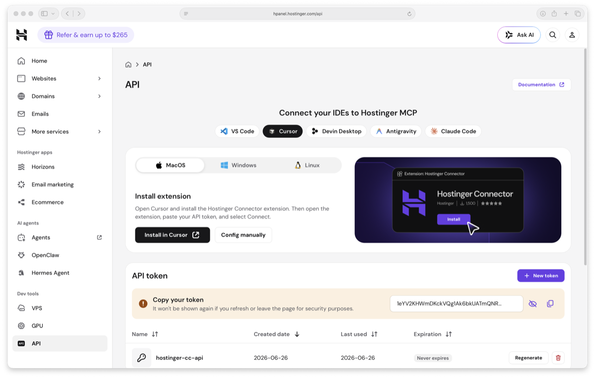
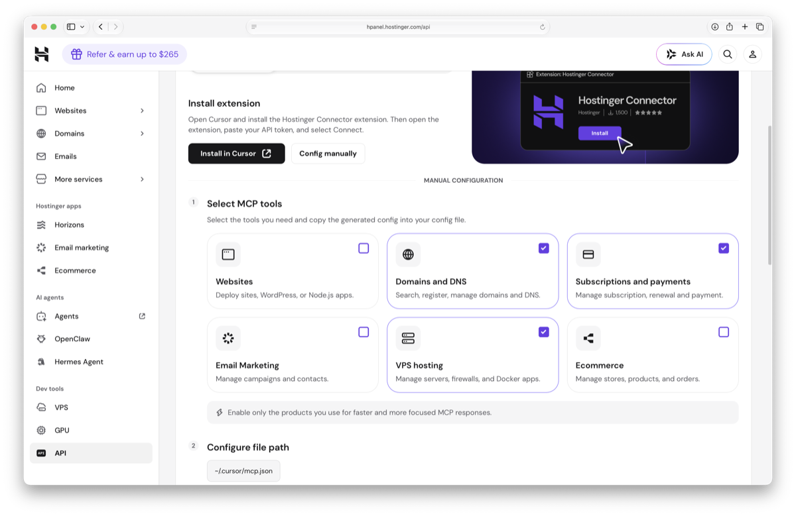
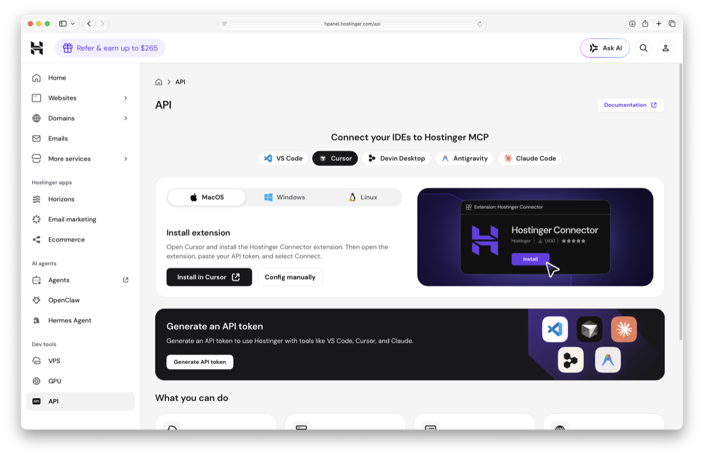
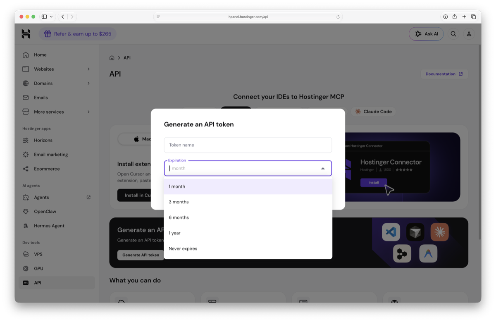
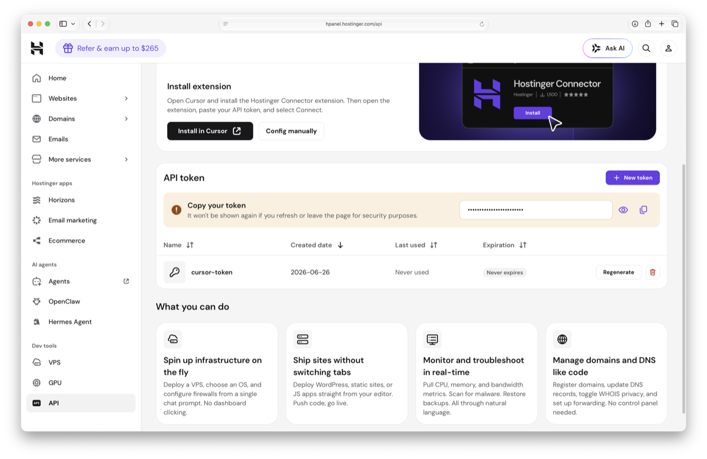
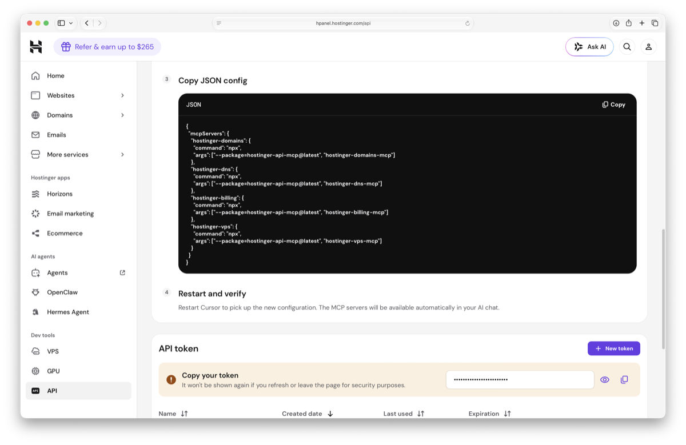

Hostinger have a native MCP server and Cursor is one of the supported IDEs. Connect it once through Cursor’s settings, then use Composer to provision a PageMotor VPS, set DNS, and deploy — without a browser or a separate terminal.
✏ Runs in Cursor Composer🔗 Official Hostinger MCP⏱ One-time setup, then just ask
Cursor vs Claude Code: the flow is almost identical — the same Hostinger MCP, the same prompt templates, the same on-box setup script. The only difference is where the MCP config goes (Cursor’s own settings panel, not a CC config file) and that you run the prompts in Cursor Composer (Cmd I) rather than in a Claude Code chat. The Claude Code version of this guide has the same content if you prefer that tool.
First time on a VPS? Start here.
A VPS is a real computer that you control, and a few steps below ask you to run a command "on the server". Here is what that means, because it trips up nearly everyone the first time.
Three things, three different jobs:
Cursor (your editor) can run server commands through Composer once the Hostinger MCP is connected, which is what this guide sets up. On its own, a chat window does not touch your server.
CloudPanel is your control panel: a web page for managing sites, databases and SSL. Point and click. It is not where you type server commands.
A terminal is a plain text window connected to the server itself. This is where any command in this guide actually runs.
So when you see a line like chown -R ..., it runs in a terminal on the VPS. Not in Cursor, not in CloudPanel.
Two ways to open a terminal on your VPS:
Browser terminal (easiest). In hPanel, open your VPS and click the Terminal button in the overview. A terminal opens in your browser, already logged in to your server. Paste your command and press Enter. Hostinger has a step-by-step with screenshots: How to use the Hostinger VPS Browser terminal.
SSH from your own computer. Open Terminal on a Mac, or PowerShell on Windows, and type ssh root@YOUR-VPS-IP. Your IP is on the Hostinger VPS page. Enter the root password when prompted. Note: as you type the password nothing appears on screen, no dots or stars. That is normal, just type it and press Enter.
The details you swap into commands:
VPS IP and root password: on your Hostinger VPS dashboard.
Site User and site path: in CloudPanel. The path is usually /home/SITEUSER/htdocs/yourdomain.com.
When you are finished, type exit to leave. That is the whole mystery solved. The rest of this guide is the easy part.
1Go to the Hostinger API page
Log into hPanel and click API in the left sidebar under Dev tools. The page opens with the Cursor tab already highlighted.

The Cursor-specific MCP setup page. Two paths: the Hostinger Connector extension (Install in Cursor) or manual JSON config. This guide covers manual config.
Extension path: if you prefer, click Install in Cursor and the Hostinger Connector extension handles the connection through a UI — no JSON editing needed. Skip to Step 7 once it’s connected. The manual path (this guide) gives you more control over which tools load in Composer.
2Select the MCP tools you need
Click Config manually. The page reveals a numbered setup flow, starting with tool selection. For PageMotor you need two:
Domains and DNS — sets the A record that points your domain at the new server
VPS hosting — creates and manages your servers
Tick only those two and untick the rest. The file path below the grid confirms where the config goes: ~/.cursor/mcp.json.

Tick only the tools you need. The file path below confirms exactly where the generated config goes.
The page says it well: “Enable only the products you use for faster and more focused MCP responses.” Fewer tools means a cleaner Composer context window.
3Generate your API token
Scroll up to the Generate an API token section and click the button.

The generate button sits between the extension option at the top and the manual config section below.
A modal opens with a name field and an expiration dropdown. Give it a name you will recognise (e.g. cursor-token) and set expiration to Never expires.

The expiration options. Never expires is the practical choice for a dev tool token on your own machine.
4Copy the token before leaving the page
After generating, the token appears once with a copy warning. Copy it now — refreshing or leaving the page hides it permanently.

Copy it now. If you miss it, click Regenerate next to the token name — the old one is invalidated immediately.
5Copy the MCP JSON config
Scroll back down to the Manual Configuration section. Step 3 on the page shows the JSON Hostinger generated for the tools you selected. Use the Copy button on the right of the code block.

The JSON is tailored to the tools you ticked. Step 4 on the page tells you to restart Cursor once it is saved.
Add your token as an env variable in each server entry. The complete, paste-ready version for DNS + VPS:
Replace YOUR-TOKEN-HERE with the token from Step 4. It must appear in each server entry separately.
6Save to ~/.cursor/mcp.json and restart
Save the JSON to ~/.cursor/mcp.json (the path the Hostinger page showed in Step 2). Create the file if it does not exist; if it does, add the Hostinger entries inside the existing mcpServers object.
Restart Cursor. The MCP servers load automatically.
Confirm they loaded: open Composer (Cmd I) and check the tool picker (the wrench icon). The Hostinger servers should be listed. If they are missing, check that Node.js is installed (node --version) so npx can fetch the package on first run.
7Open Composer and provision the VPS
Press Cmd I to open Composer. Paste this prompt, editing your domain and details:
Composer prompt — edit the domain and plan details
Using the Hostinger MCP, provision a new VPS for me:
- Plan: KVM 2
- Template: CloudPanel on Ubuntu 24.04
- Region: Manchester, UK (data_center_id 18)
- Hostname: pagemotor-mysite
- Inject my SSH key from ~/.ssh/id_ed25519.pub
Once the VPS is running:
1. Read the IP address from the Hostinger API
2. Create a DNS A record pointing mysite.com at that IP
(use the Hostinger DNS MCP if my domain is at Hostinger;
tell me the IP to set manually if it is elsewhere)
Confirm when the VPS is running and DNS is set.
Which region should I pick? (datacenter IDs)
Specify by name or ID — the MCP understands both. IDs confirmed from the live API:
ID
Location
Good for
18
Manchester, UK
Ireland, UK, Northern Europe
15
Paris, France
Western Europe
19
Frankfurt, Germany
Central Europe
11
Vilnius, Lithuania
Eastern Europe / Baltic
24
Boston 2, USA
US East Coast
What does Composer actually send to the Hostinger API?
For the technically curious. The MCP translates your plain-English request into a call like this:
POST /api/vps/v1/virtual-machines
{
"item_id": "hostingercom-vps-kvm2-usd-1m", // KVM 2, billed monthly"setup": {
"template_id": 1096, // Ubuntu 24.04 with CloudPanel"data_center_id": 18, // Manchester, UK"hostname": "pagemotor-mysite",
"public_key": "ssh-ed25519 ..."// from ~/.ssh/id_ed25519.pub
}
}
The item_id is the billing price ID. Monthly and annual differ by suffix:
Plan
RAM
Monthly price ID
Intro price
KVM 1
4 GB
hostingercom-vps-kvm1-usd-1m
$9.99/mo
KVM 2
8 GB
hostingercom-vps-kvm2-usd-1m
$13.99/mo
KVM 4
16 GB
hostingercom-vps-kvm4-usd-1m
$25.99/mo
KVM 8
32 GB
hostingercom-vps-kvm8-usd-1m
$50.99/mo
Swap -1m for -1y or -2y for annual billing, which is cheaper per month.
Bonus template: Hostinger also has template 1189 — "Ubuntu 24.04 with Claude Code" — which pre-installs the CC CLI on your server. If you want to run Claude Code directly on the VPS itself, swap template_id: 1096 for 1189 and mention it in your Composer prompt.
Cursor Composer calls the hostinger-vps and hostinger-dns MCP tools directly. You can watch which tools it calls in the Composer panel. Provisioning takes three to six minutes — Composer will poll and update you.
Cursor’s @-reference advantage: you can attach context to your Composer prompt by typing @ before the file name. For example, type @provision-pagemotor.sh to attach the on-box script so Cursor can read it while working. Cursor also reads your project’s open files automatically, so if you have your Cloudflare credentials file open, Cursor can reference it too.
Billing note: the VPS creation call charges your Hostinger account. Make sure you have a payment method on file and confirm the plan before Composer submits the request. KVM 2 (8 GB, the recommended starting point) is $13.99/month at introductory pricing.
8Let Composer finish the on-box setup
Once the VPS is running and DNS is set, give Composer the second brief. Download the on-box script first so Cursor can reference it with @:
Then paste this into Composer (use @provision-pagemotor.sh at the top to attach the file):
Second Composer prompt
@provision-pagemotor.sh
Good. Now SSH into [IP] as root using ~/.ssh/id_ed25519 and:
1. Create a PHP 8.3 site in CloudPanel for mysite.com
(site user: mysite, generate a random password)
2. Add a database: mysite-db / user mysite-user / strong random password
3. Upload ~/Downloads/pagemotor-0.9.4b.zip to /tmp/pagemotor.zip on the server,
extract it into /home/mysite/htdocs/mysite.com/ (files go in the root, no subfolder)
4. Write config.php (DB_HOST 127.0.0.1, prefix pm_, error logs true)
5. Fix ownership: chown -R mysite:www-data
6. Once DNS resolves, run: clpctl lets-encrypt:install:certificate --domainName=mysite.com
7. Confirm the site loads at https://mysite.com/
Reference the provision-pagemotor.sh script for the exact clpctl commands.
Cursor reads the script, adapts the commands to your site name, and runs them over SSH using its built-in terminal. It will output each step as it runs.
CloudPanel gotchas the script already handles:
Database names use hyphens, not underscores (CloudPanel rejects underscores silently).
PHP version must be 8.3 — do not let it default to 8.5.
PageMotor files go straight into the site root, not a subfolder.
SSL is requested after DNS resolves — the script loops and waits.
9Verify with EP Host Check
Visit https://mysite.com/admin/ and register your PageMotor admin account. Then install EP Host Check from the EP Suite updates channel and run it.
All 12 checks should be green. The key one is PHP can save PageMotor’s files. That is the check that goes red on a locked-down shared host and green on a properly-owned VPS. When it is green, your designs will save, your theme will compile, and the “9 out of 10 bugs are the host” category is closed.